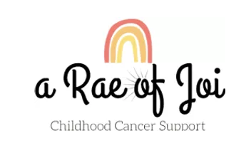
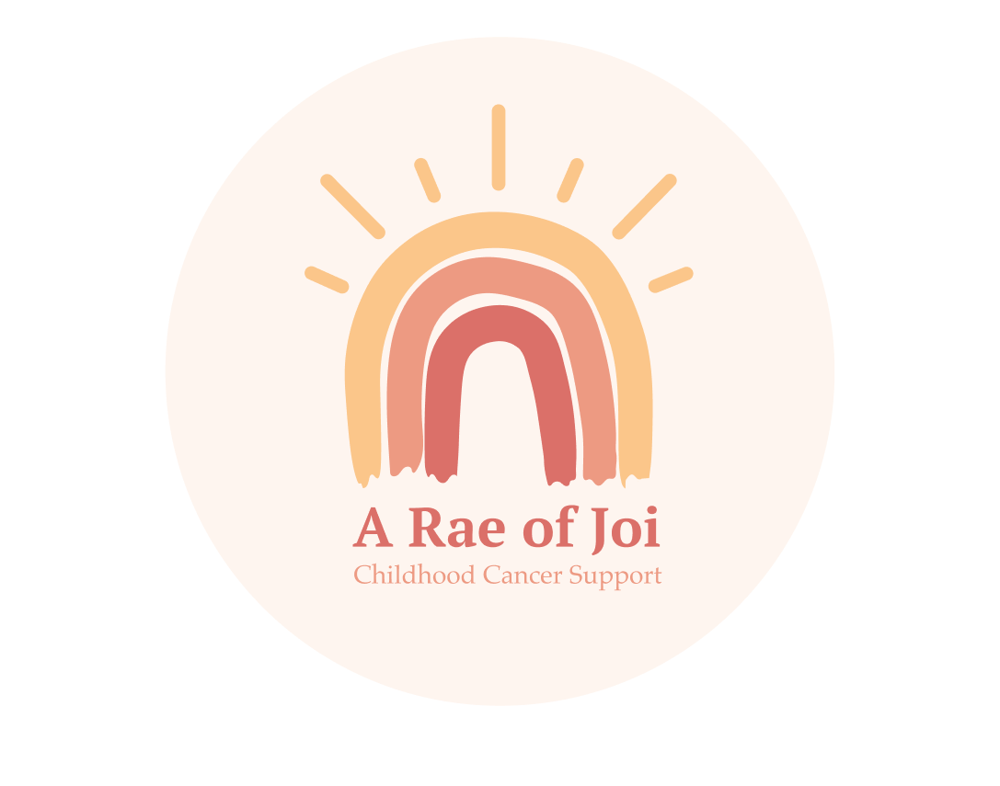

Introduction
A Rae of Joi was started by Taylor and Tony Kimbrough after their daughter was diagnosed with pediatric cancer.
They received many donations in the form of toys from NGOs and individual donors. So much so that their house was filled with just toys. However, they still struggled to acquire other necessities for their daughters, such as medical grade thermometers. The idea for A Rae of Joi was born from this struggle in order to help other families battling childhood cancer diagnosis by providing support in the form of donations, items, or experiences.
Role
Competitive Analysis
User Testing
Newsletter Template
Design Input
SEO
Writing Content
Team
Maddie Carlson
Miguel Rodriguez
Hari Murugan
Alina Shehzad
Felix Wang
Samantha Wanamaker
Duration
9 weeks
Tools
Figma
Wix
MailChimp
Canva
Project Goals
Since A Rae of Joi is just starting out, they need design and consulting services to establish their website and brand presence online so they can start helping families out.
- Create a presence through an online platform [website]
- Define the organization’s brand & keep it consistent across all platforms
- Design an experience for parents to submit their wishes through the website
- Market the brand to reach a bigger audience through social media platform(s)
- Establish an SEO strategy to make the website easily searchable
- Create guidebook with full documentation for A Rae of Joi
Competitive Analysis
Since this was the first time our team was designing a website for a charity, we took some time to look through 3 different charity organization (Livestrong, Gilda's Club New York, Make-a-Wish) websites. This was later used to influence our design decisions.
Keeping in mind the features the client wanted in their site, we looked at how each of these charities presented their:
- Navigational structure
- Donation flow
- Resources page
- Events page
Key Findings
- Donation button is bright and colorful compared to other navigational items
- Donation page provides preselected amounts users can choose
- Some sites had the ability to designate their donation to someone
Branding
The client wanted to present their organization in a bright way, in order to present the image of hope and support for families battling with pediatric cancer diagnosis. We chose the font Nunito as it gave a rounded and fun image, while still being professional. The colors incorportate chidhood cancer's golden color and other warm and fun colors. The dark blue creates a contrast to the bright colors.
The logo was redesigned with the original design in mind. It carries across a message of hope with the rainbow and incorporates the organization's name to keep the brand identity.
Before
After
Social Media/Newsletter
In order to increase website visibility, it was important to promote the organization through social media. The client wanted to primarily use Instagram, with a possibility of expanding to Facebook in the future. Story templates for Instagram were created for parents that have used A Rae of Joi services to post on their own accounts. This will also serve to help the organization's social media account gain traction. Screens for Instagram Highlights were created as well to showcase the history and mission statement of A Rae of Joi in an easy to view format.
The client opted to not include a blog in their website, but still wanted a way to connect with their audience. A template through MailChimp was made in order for the client to share news, upcoming events, and spotlights to children diagnosed with pediatric cancer.
Instagram Story


Instagram Highlights


Website
For the website design, our main focus was the “Parent’s Wish” page where users can submit a form to receive assistance from A Rae of Joi. The goal of this page was to communicate to the user what a “Wish” is (with examples) and who is eligible to receive one. We wanted an easy form that users can fill out and send through the site.
Wireframes
Design Update
Our client also wanted to be able to receive donations. Taking inspiration from the competitive review, we plan to create a button separate from the navigation bar so it will stand out. The donation flow will also be similar to the other charity websites we viewed. The user will have the option to choose an amount from the list or type in a custom amount.
A usability test was conducted to test the “Parent’s Wish” feature, donation flow, and if user’s can find the proper resources on the site. There were a total of five participants with 100% task success rate. With this we moved on to finalize our design.